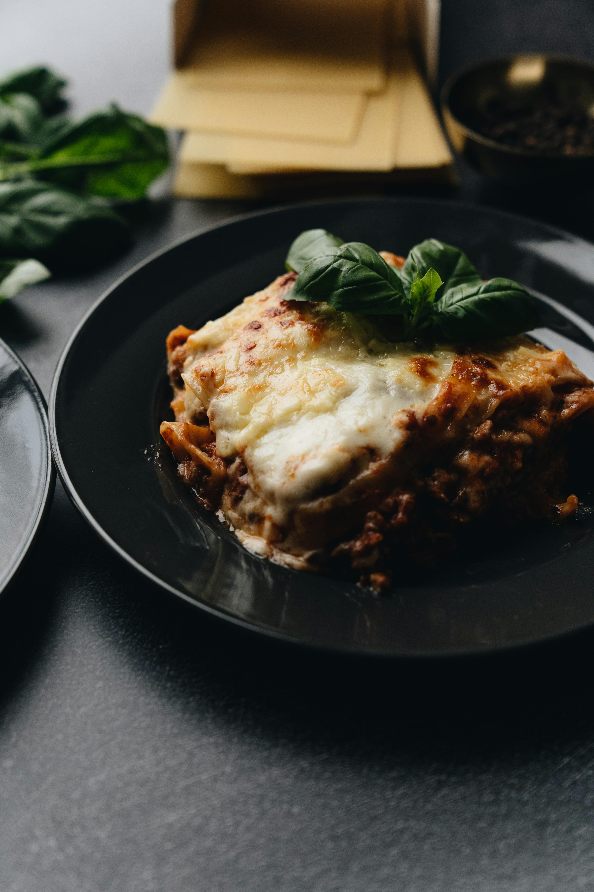

Home
Lasagna

Description
A vegetarian variation of the world's best lasagna!
A dish that is associate with Italy, comfort and family time. This recipe is an instant classic.
Meat eaters won't be able to tell that this dish is vegetarian.
The meat is replaced with ground meat substitute, keeping the same texture as a meat variation.
Ingredients
- 1 tablespoon olive oil
- ½ cup minced onion
- 2 cloves garlic, minced
- 1 (15 ounce) can crushed tomatoes
- 1 (8 ounce) can tomato sauce
- 8 ounces plant-based hot Italian-style sausage (such as Beyond Meat), chopped
- 6 ounces cooked and crumbled ground meat substitute (such as Boca)
- 1 (6 ounce) can tomato paste
- ¼ cup water
- 3 tablespoons chopped fresh parsley, divided
- 1 tablespoon white sugar
- 1 teaspoon salt, divided
- ¾ teaspoon dried basil
- ½ teaspoon Italian seasoning
- ¼ teaspoon fennel seeds
- ⅛ teaspoon ground black pepper
- 12 lasagna noodles
- 1 (15 ounce) container ricotta cheese
- 1 egg, lightly beaten
- 12 ounces mozzarella cheese, sliced
- 6 ounces grated Parmesan cheese
- cooking spray
Steps
-
Heat oil in a Dutch oven over medium heat. Add onion and garlic; cook and stir until tender, 3 to 5 minutes. Stir in crushed tomatoes, tomato sauce, plant-based sausage, meat substitute crumbles, tomato paste, water, 1 tablespoon parsley, sugar, 1/2 teaspoon salt, basil, Italian seasoning, fennel seeds, and black pepper. Bring to a boil, then reduce heat; simmer, covered, stirring occasionally, until thickened, about 1 1/2 hours.
-
Bring a large pot of lightly salted water to a boil. Cook lasagna noodles in the boiling water, stirring occasionally, until tender yet firm to the bite, 8 to 10 minutes. Drain and rinse noodles with cold water.
-
Preheat the oven to 375 degrees F (190 degrees C).
-
Spread 1/3 tomato sauce mixture in a 9x13-inch baking dish. Arrange 6 noodles lengthwise over sauce. Spread with 1/2 ricotta mixture. Top with 1/3 mozzarella slices. Spoon 1/3 tomato sauce mixture over mozzarella; sprinkle with 1/4 cup Parmesan. Repeat layers; top with remaining mozzarella and Parmesan. Coat a piece of aluminum foil with cooking spray; cover baking dish, coated-side down.
-
Bake in the preheated oven for 25 minutes. Remove foil; bake until hot and bubbly, about 25 minutes more. Cool 15 minutes before slicing into 12 equal servings.